🔥 Configuration du pare-feu Stormshield SN210
Cette page documente la configuration complète du pare-feu Stormshield SN210 utilisé dans l’infrastructure BESAFE.
Il s’agit du point de contrôle central entre le LAN interne, la DMZ et la sortie Internet.
⚙️ Détails techniques
| Élément | Valeur |
|---|---|
| Modèle | Stormshield SN210 (physique) |
| Firmware | v4.7.4 |
| Rôle | Pare-feu, routage inter-VLAN, NAT, VPN |
| Accès WebAdmin | https://10.47.200.254:8443/admin |
| Méthode d’administration | HTTPS / SSH |
🌐 Étape 1 : Configuration réseau
Objectif : définir les interfaces physiques et VLANs associés afin d’assurer le routage entre les réseaux internes et la connectivité Internet.
📸 Capture 1 – Vue d’ensemble des interfaces
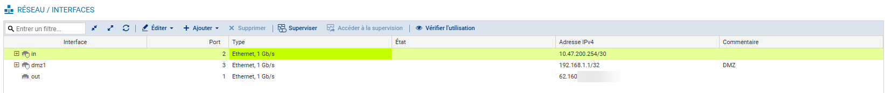
Le pare-feu SN210 dispose de 3 interfaces physiques principales :
| Interface | Nom | Type | Description |
|---|---|---|---|
| OUT (eth0) | WAN | DHCP | Connectée directement à la box Internet |
| IN (eth1) | LAN (Trunk 802.1Q) | VLAN tagués | Transporte tous les VLAN internes |
| DMZ (eth2) | DMZ | Statique | Réseau isolé pour les services exposés |
📸 Capture 2 – Vue des VLAN configurés
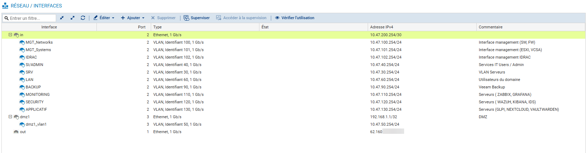
L’interface IN (eth1) transporte les VLAN suivants :
| VLAN | Nom | Réseau | Adresse FW (.254) | Description |
|---|---|---|---|---|
| 30 | SRV | 10.47.30.0/24 | 10.47.30.254 | Serveurs AD/DNS/DHCP/PKI |
| 40 | SI/Admin | 10.47.40.0/24 | 10.47.40.254 | Admin interne |
| 50 | DMZ | 10.47.50.0/24 | 10.47.50.254 | Réseau exposé |
| 60 | LAN | 10.47.60.0/24 | 10.47.60.254 | Utilisateurs internes |
| 90 | BACKUP | 10.47.90.0/24 | 10.47.90.254 | Sauvegarde (Veeam) |
| 100 | MGT_Networks | 10.47.100.0/24 | 10.47.100.254 | Mgmt Switch / FW |
| 101 | MGT_Systems | 10.47.101.0/24 | 10.47.101.254 | Mgmt ESXi / VCSA |
| 102 | IDRAC | 10.47.102.0/24 | 10.47.102.254 | Accès IDRAC serveurs |
| 110 | MONITORING | 10.47.110.0/24 | 10.47.110.254 | Supervision (Zabbix / Grafana / Prometheus) |
| 120 | SECURITY | 10.47.120.0/24 | 10.47.120.254 | Wazuh / IDS / SOC |
| 130 | APPLICATIF | 10.47.130.0/24 | 10.47.130.254 | GLPI / Nextcloud / Vault |
| 150 | VPN | 10.47.150.0/24 | 10.47.150.254 | Accès distant |
| 200 | MGT_FW | 10.47.200.0/24 | 10.47.200.254 | Accès administrateurs FW |
📸 Capture 3 – Routage par défaut
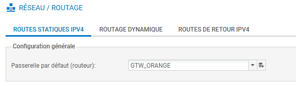
- La passerelle par défaut (WAN) est obtenue via DHCP depuis la box Internet.
- Le routage inter-VLAN est géré localement sur le SN210.
- Une route statique optionnelle peut exister vers le réseau VPN (150).
⚙️ Bonnes pratiques
- 🔒 Limiter les VLANs exposés à la DMZ.
- 🧱 Créer des objets réseau par VLAN pour simplifier les règles.
- 🕒 Activer la NTP sync sur le FW pour les logs centralisés.
🧱 Étape 2 : NAT et filtrage
Objectif : créer les règles de translation d’adresse (NAT) et de filtrage entre les VLANs internes, la DMZ et Internet.
📸 Capture 4 – NAT sortant
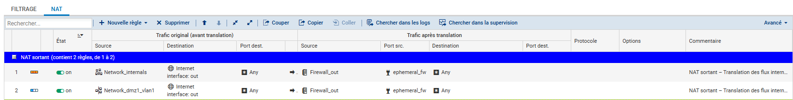
📸 Capture 5 – NAT entrant
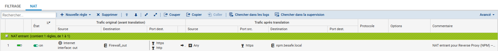
📸 Capture 6 – Politique de filtrage

💡 Organiser les règles par zone (WAN, LAN, DMZ, VPN) pour plus de clarté.
🔐 Étape 3 : VPN (IPSec / SSL)
🌐 3.1 – Objets réseau & ports utilisés
📸 Capture 7 – Objets VPN
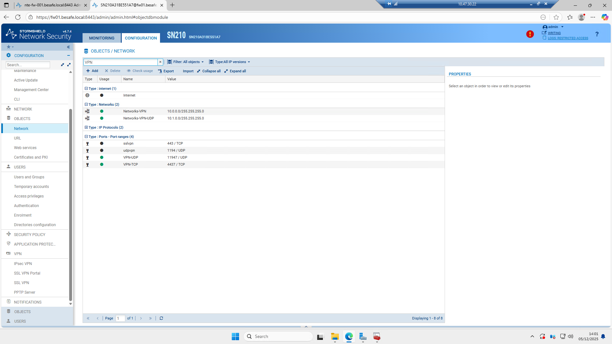
Objets utilisés par les VPN :
- Networks-VPNUDP / VPNTCP → Pools d’adresses VPN
- sslvpn / udpvpn / VPN-UDP / VPN-TCP → Ports utilisés pour le SSL VPN
- Network_internals → Réseau BESAFE accessible via VPN
🔒 3.2 – Configuration VPN SSL (Client-to-Site)
📸 Capture 8 – Paramètres VPN SSL
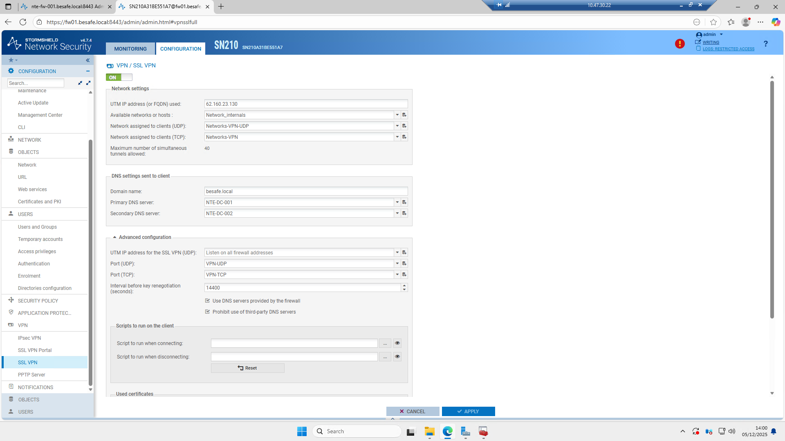
Principaux réglages :
- IP publique UTM : 62.160.x.x
- Réseaux accessibles : Network_internals
- Ports : UDP 11947 / TCP 4437
- DNS fournis : NTE-DC-001 / NTE-DC-002
- Options : Interdiction DNS tiers, écoute sur toutes interfaces
🛂 3.3 – Droits d’accès VPN (LDAP)
📸 Capture 9 – Droits VPN
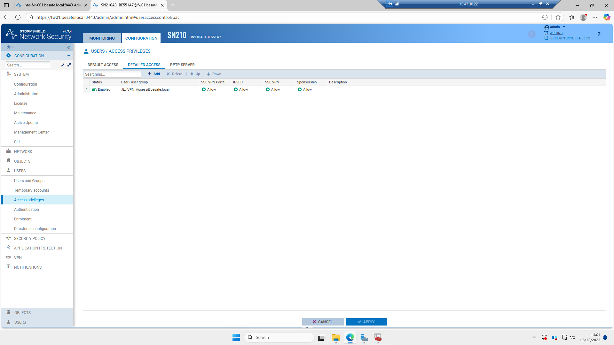
- Groupe AD autorisé : VPN_Access@besafe.local
- Accès SSL VPN : Allow
- Accès IPSec : Allow
- Authentification via LDAP AD
📜 Étape 4 : Certificat SSL du Firewall
L’objectif est d’importer un certificat signé par la PKI interne** pour sécuriser l’accès HTTPS à l’interface d’administration du pare-feu et au portail d’authentification.
📸 Capture 10 – Certificat généré pour le firewall
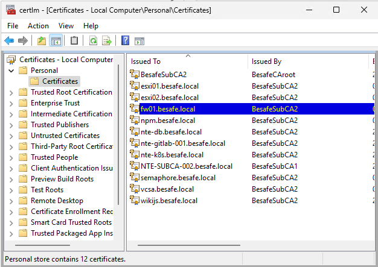
Le certificat fw01.besafe.local est émis par BesafeSubCA2 et exporté au format P12 avec les SAN :
- fw01.besafe.local
- nte-fw-001.besafe.local
📸 Capture 11 – Export du certificat sur le serveur Windows
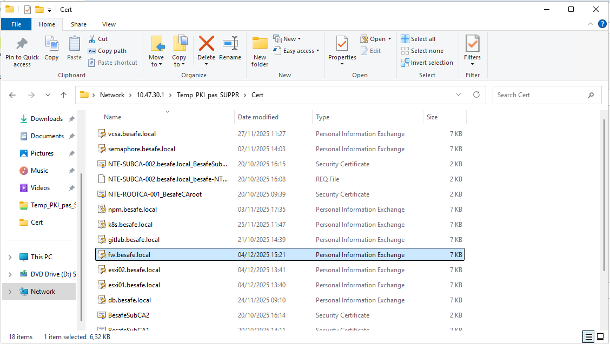
Le fichier fw01.besafe.local.p12 est prêt pour l’import sur le Stormshield.
📸 Capture 12 – Import du certificat dans Stormshield
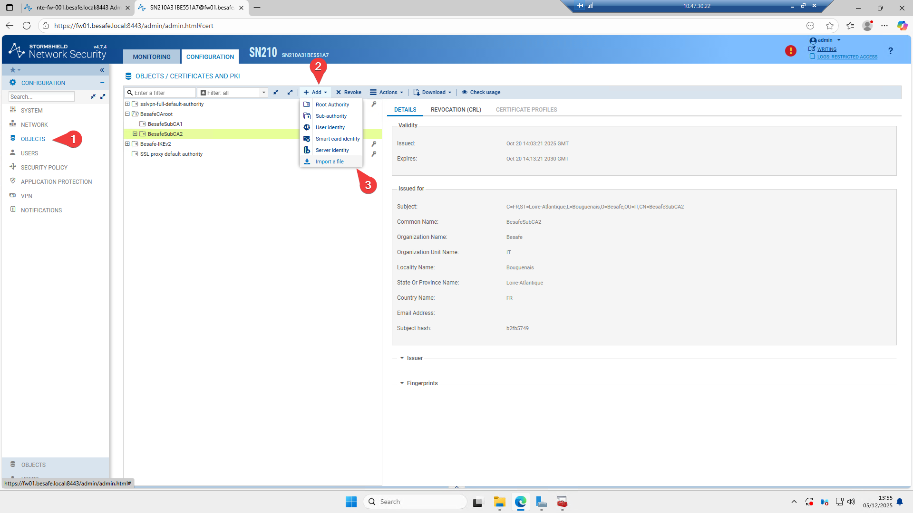
Navigation :
Objects → Certificates and PKI → Add → Import a file
📸 Capture 13 – Paramètres d’import
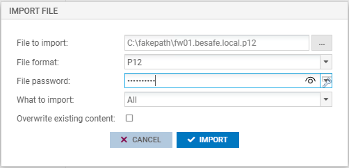
- File format : P12
- Password : mot de passe d’export
- What to import : All
📸 Capture 14 – Certificat importé
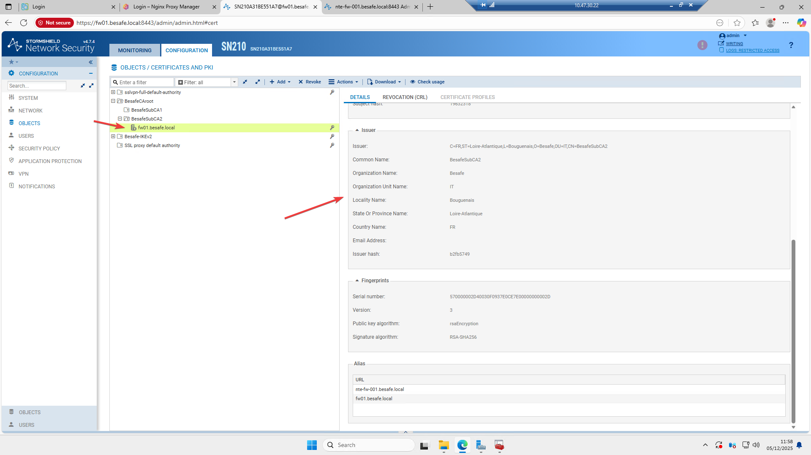
Vérification :
- Chaîne complète → BesafeRootCA → BesafeSubCA2 → fw01.besafe.local
- SAN corrects
- Signature SHA256
📸 Capture 15 – Affectation du certificat à l’interface d’administration
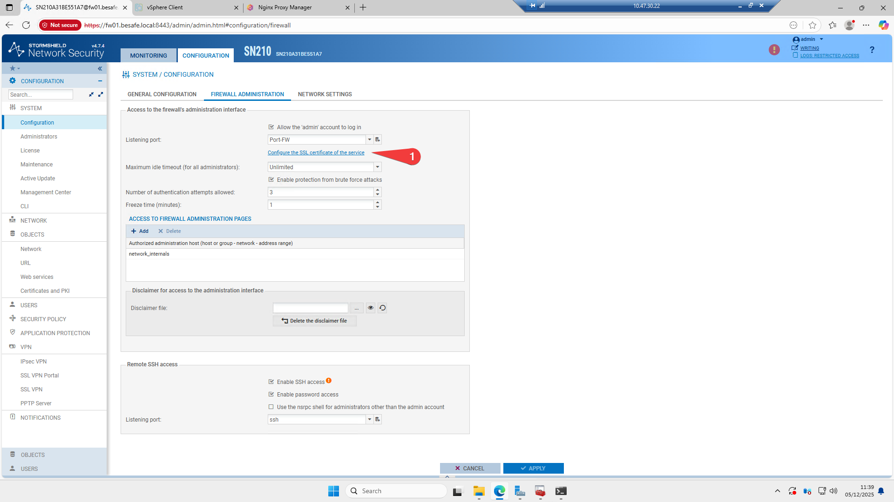
Chemin :
System → Configuration → Firewall Administration → Configure the SSL certificate
Sélectionner : fw01.besafe.local
📸 Capture 16 – Assignation au portail Captive
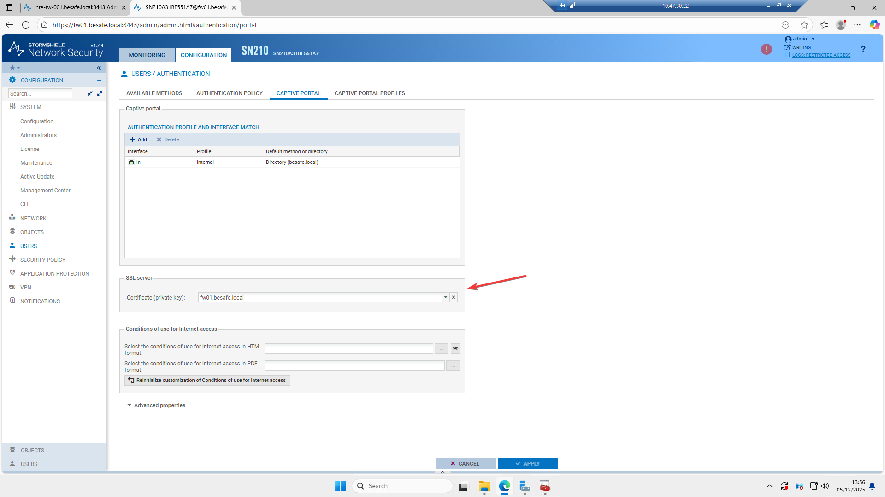
Chemin :
Users → Authentication → Captive Portal
Sélectionner également : fw01.besafe.local
📸 Capture 17 – Vérification côté navigateur
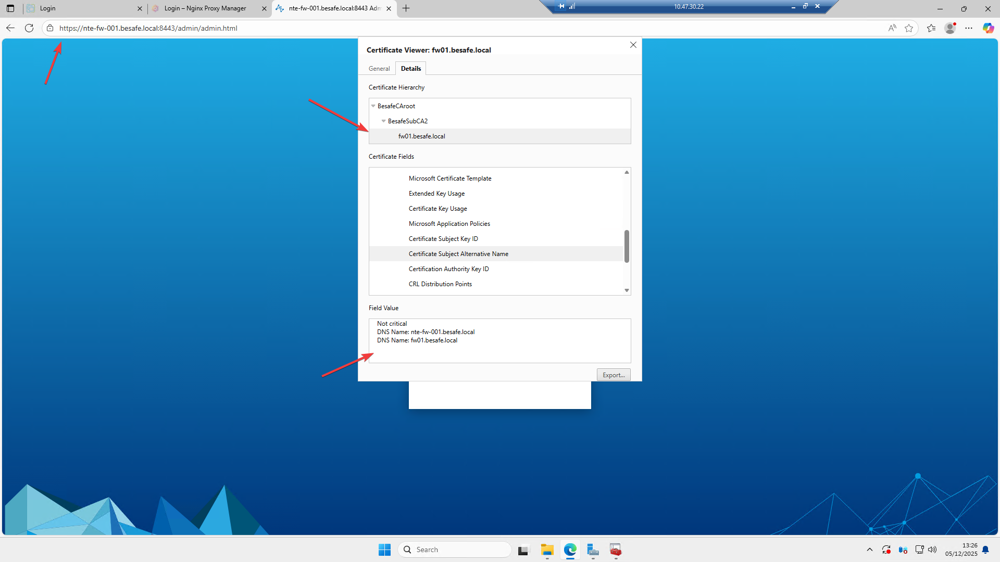
La connexion HTTPS est maintenant :
- 🔒 Sécurisée
- ✔️ Sans avertissement
- 🎯 Signée par ta PKI BesafeSubCA2
🧩 Étape 5 : Intégration Active Directory / LDAP
Objectif : permettre au pare-feu Stormshield d’utiliser les comptes AD pour
– l’authentification VPN (SSL & IPSec),
– l’accès administrateur au WebAdmin,
– la gestion centralisée des permissions.
📸 Capture 18 – Configuration du répertoire LDAP (AD BESAFE)
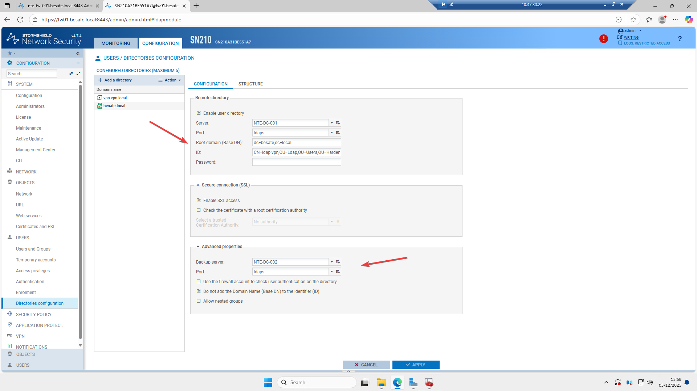
| Paramètre | Valeur BESAFE | Commentaire |
|---|---|---|
| Server | NTE-DC-001 |
Contrôleur principal |
| Backup Server | NTE-DC-002 |
Haute disponibilité LDAP |
| Protocol | LDAPS |
Connexion chiffrée recommandée |
| Root Domain (Base DN) | dc=besafe,dc=local |
Domaine racine |
| Bind DN | CN=ldap vpn,OU=ldap,OU=Users,OU=Hard... |
Compte de service dédié |
🔒 Notes de sécurité BESAFE :
- Le compte ldap vpn est un compte de service dédié, placé dans l’OU sécurisée Harden_T12.
- Il dispose uniquement du droit Read dans l’annuaire.
- L’usage de LDAPS est obligatoire (port 636) → Empêche la fuite d’identifiants en clair.
📸 Capture 19 – Politique d’authentification (Default = LDAP)
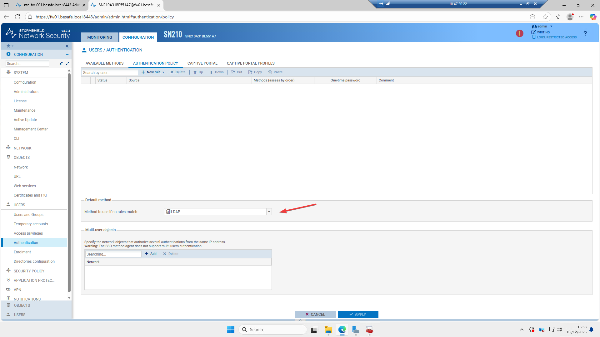
Le pare-feu utilise LDAP comme méthode d’authentification principale pour :
- VPN SSL
- VPN IPSec (EAP / ID-Password / AD)
- Connexion administrateur (optionnel selon politique BESAFE)
👉 Cela permet d’utiliser les groupes AD pour autoriser l’accès VPN.
Exemple : le groupe VPN_Access@besafe.local → accès SSL + IPSec.
📸 Capture 20 – Vue des utilisateurs AD reconnus par le Firewall
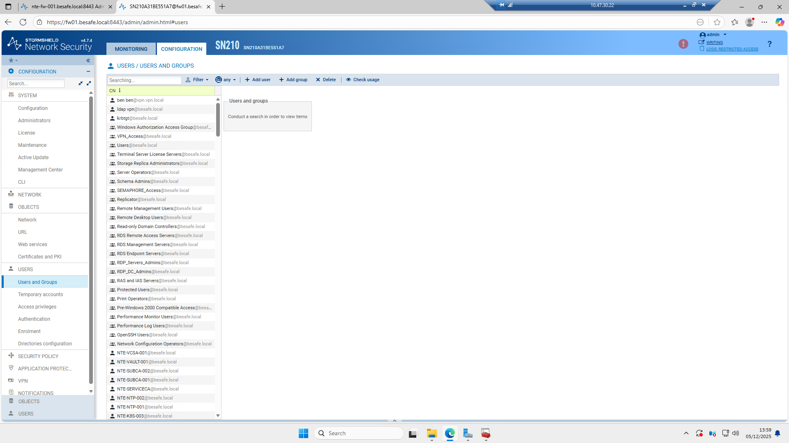
Le pare-feu interroge directement Active Directory via LDAPS et remonte les comptes/groupes disponibles.
Cela permet d'appliquer des politiques d’accès basées sur les groupes AD (ex : VPN_Access@besafe.local).
✅ Résumé global
| Étape | Élément | Description | Validation |
|---|---|---|---|
| 1️⃣ | Interfaces | OUT, IN (Trunk), DMZ | ✅ |
| 2️⃣ | VLANs | Nos VLANs | ✅ |
| 3️⃣ | NAT / Filtrage | Configuré selon politique BESAFE | ✅ |
| 4️⃣ | VPN | À compléter | ✅ |
| 5️⃣ | Certificat SSL | À compléter | ✅ |
| 6️⃣ | AD / Auth | À compléter | ✅ |